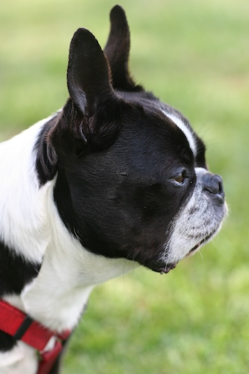

Welcome to Karen T. Jones Photography
Capturing life's special moments with elegance and authenticity. Whether you're celebrating a wedding, graduation, or just want to preserve family memories, Karen brings a personal and professional touch to every photo session.
